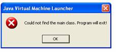

|
Frequently Asked Questions and Troubleshooting I get the following error when trying to execute Voice Launch?  This error is caused when the host machine does not have Java JRE 1.5 or later installed correctly. The latest version of Java JRE can be obtained from http://java.sun.com My microphone does not record any voice? What is going on? Step 1) Make sure that the microphone is properly connected to the computer. Step 2) Make sure the microphone is not set to mute. Step 3) The Java Virtual Machine records from the selected device under Windows Recording Option. Please refer to installation page on how to setup Windows Recording Options.
If for some reason there is another application running which uses the same combination of hotkeys, then there is possibility that application might have overridden Voice Launch’s hotkey settings. Try closing all other applications and restarting Voice Launch. Can I backup my library? Yes, go to Voice Launch’s installation directory (by default it is C:\Program File\Voice Launch) and look for the ‘Classes’ folder. Under Classes folder, there is another folder called ‘user’. That folder contains all the data that has been saved. Make a copy of that folder to create a backup of your data. How do I open Voice Launch window once I have hidden it? Right click on the system tray icon and choose Open Voice Launch. The Continuous Recording does not work for me? Continuous Recording was created as a test and was not expected to have very high accuracy. Unfortunately, there is not much that can be done to improve the accuracy. Can I distribute Voice Launch to my friends? Yes, certainly. However, THIS APPLICATION SHALL NOT BE SOLD TO ANYBODY FOR ANY PRICE, and all credits must be given to Amir Raminfar. |